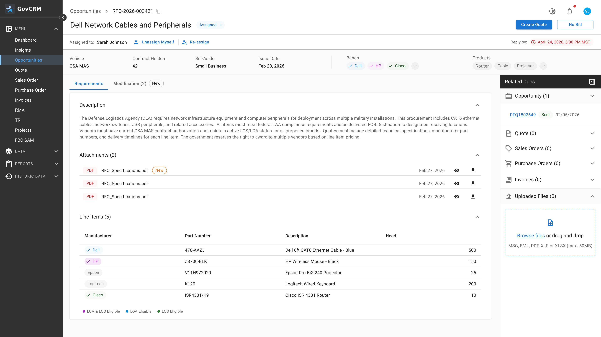

One Workspace
Connected opportunity information.
Intelligence for government resellers
An AI-powered CRM built to simplify opportunities, product research, vendor coordination, and quoting for government resellers.
[ The challenge ]
Your team moves between customer requirements, vendor conversations, compliance details, product research, and quote preparation. Traditional CRMs weren’t built around that workflow.
Information scattered across documents, emails, and spreadsheets.
Repeated work to find suitable products and coordinate vendors.
Technical requirements, compliance, and pricing must come together.
[ The platform ]
A connected workspace for the people, information, and decisions behind government sales.

Connected opportunity information.
Research and workflow support.
Purpose-specific sales processes.
[ Core capabilities ]
Purpose-built tools to reduce friction across the government sales lifecycle.
Organize requests, documents, requirements, and customer information.
Find relevant options and support technical specification reviews.
Track sourcing conversations, requests, replies, and follow-ups.
Connect selected items and sourcing details to the quoting workflow.
[ Intelligent workflow ]
A continuous, visible workflow with AI assistance and human review where needed.
Bring opportunity documents and requirements together.
Identify and review products matching customer needs.
Coordinate vendor requests and responses.
Prepare quotes using selected sourcing information.
[ Why JPJ SI ]
Government reselling has its own requirements. The software should reflect that reality.
Built around sourcing, vendor coordination, and quoting rather than a generic sales funnel.
AI assistance appears within the work itself, where it can support better decisions.
Clear review points for technical specifications, alternatives, and quote preparation.
Intelligence for what’s next
See how an intelligent CRM can simplify the complex work behind government sales.